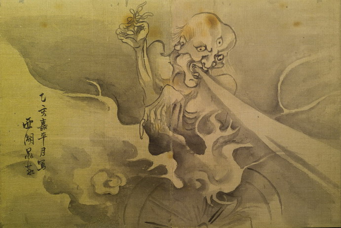

三つ目の男が燃える車輪に乗り、口から光のような物を吐き出している。男の頭は禿げ上がり、額の真ん中に3番目の目がついている。体には何も身につけておらず、手指は細く、ねじれている。車輪から上がる炎と煙が、男の回りを取り囲んでいる。
著作者：西湖鬼敬／出典：親書誌：U426_nichibunken_0155：東都画家妖怪画帖；トウトガカヨウカイガチョウ／日付：2010／資源識別子：U426_nichibunken_0155_0006_0000
Copyright (c)2010- International Research Center for Japanese Studies, Kyoto, Japan. All rights reserved.